抵達岡山，初見山陽
✈ IT214 桃園 11:10 → 岡山 14:35
- 桃園機場
- 岡山機場
- 岡山後樂園
- 岡山／倉敷
午機上餐晚岡山風味豬排御膳日幣 3,000
住宿倉敷國際飯店／倉敷長春藤廣場／岡山華盛頓廣場 或同級
SETOUCHI ・ OKAYAMA × HIROSHIMA
一座鳥居一海戀，小團慢遊旅天下
01/14–01/18五日遊岡山・倉敷・尾道・廣島・宮島
把這趟旅程走過的地方，一站一站慢慢介紹給你。點選路線上的站名，可以直接跳到對應的景點。
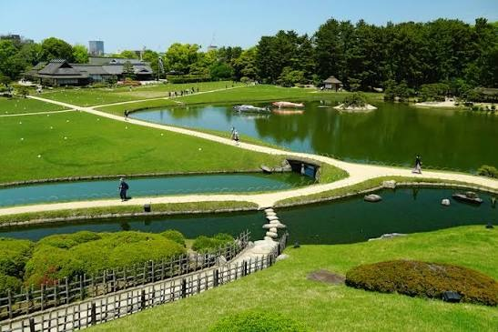
岡山後楽園岡山縣岡山市
與金澤兼六園、水戶偕樂園並列為日本三名園。江戶時代由岡山藩主池田綱政下令興建，開園至今已超過三百年。園內以遼闊的草坪、流水與池泉為主軸，遠方的岡山城天守也被巧妙借景入園。
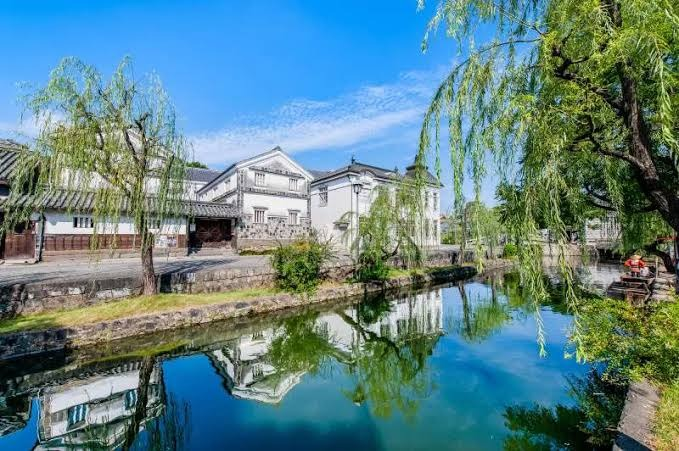
倉敷美観地区岡山縣倉敷市
江戶時代是幕府直轄的「天領」，因米與棉的集散而繁榮。沿著倉敷川兩岸，白壁土藏與黑瓦町家整齊排列，河畔柳樹垂枝，街區保存得相當完整，運河上還可見遊船緩緩划過。
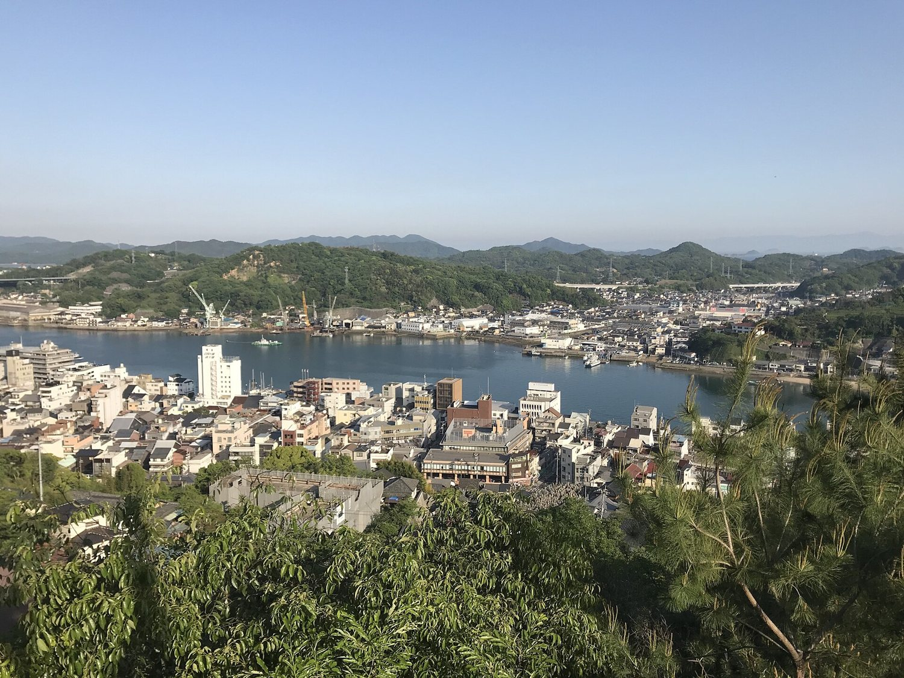
尾道・千光寺公園廣島縣尾道市
尾道依山面海，沿著斜坡蓋滿了寺院與老屋。千光寺公園位在千光寺山上，登上展望台，尾道水道、對岸的向島與連綿的瀨戶內島嶼盡收眼底，冬季空氣清澈，視野格外遼闊。
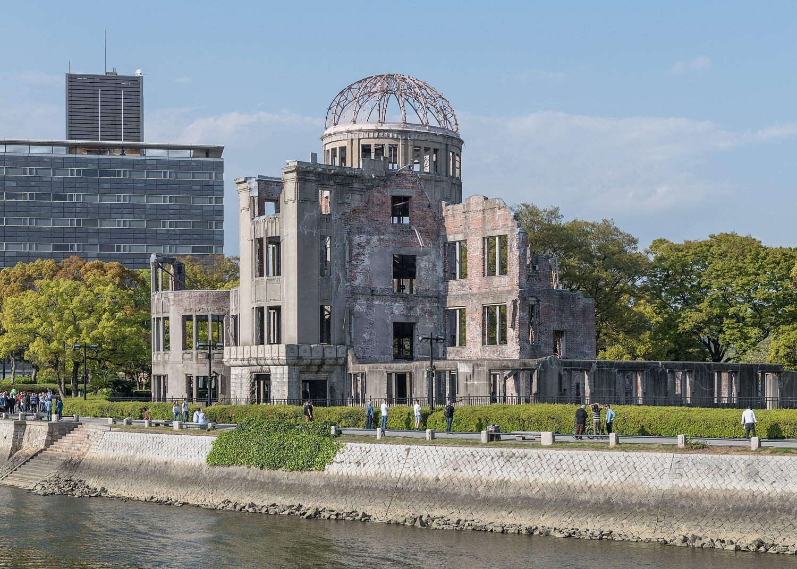
原爆ドーム廣島縣廣島市
前身是 1915 年落成的廣島縣產業獎勵館。1945 年 8 月 6 日，原子彈在其上空爆炸，建築雖嚴重毀損，圓頂鋼架與部分牆體仍被保留下來。1996 年列入世界文化遺產，是向世人傳達和平的重要象徵。
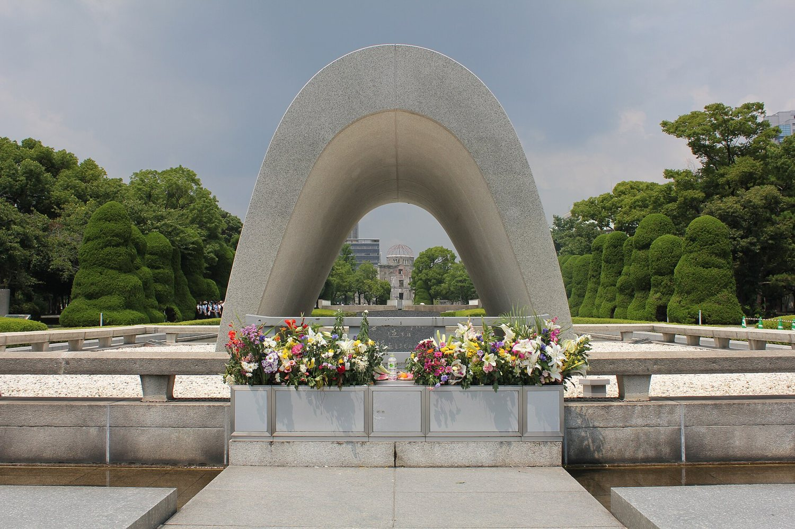
広島平和記念公園廣島縣廣島市
位於原爆中心地附近的紀念公園，園內設有原爆死沒者慰靈碑，從拱形碑身望出去，遠處正好能看見原爆圓頂館。公園內另有和平紀念資料館，以資料與遺物訴說當年的歷史。
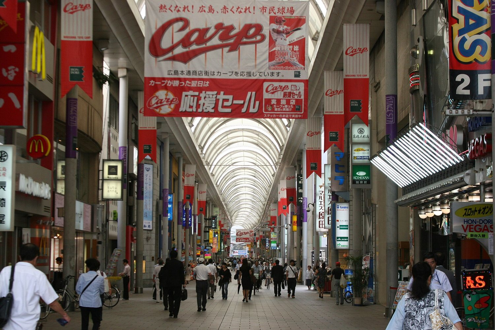
広島本通商店街廣島縣廣島市
廣島市中心最熱鬧的拱廊商店街之一，頂棚遮蔽下晴雨皆宜，服飾、雜貨、藥妝與餐飲店櫛比鱗次，沿途也處處可見廣島東洋鯉魚隊的紅色應援旗幟。
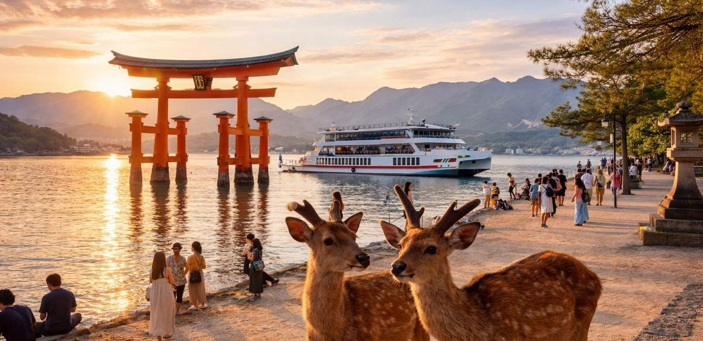
宮島・厳島神社廣島縣廿日市市
宮島是日本三景之一，島上的嚴島神社於 1996 年列入世界文化遺產。神社建在海邊，漲潮時殿舍與朱紅色的大鳥居彷彿漂浮在海面上，退潮時則可以走近鳥居細看它的結構。島上還有悠閒散步的野生鹿。
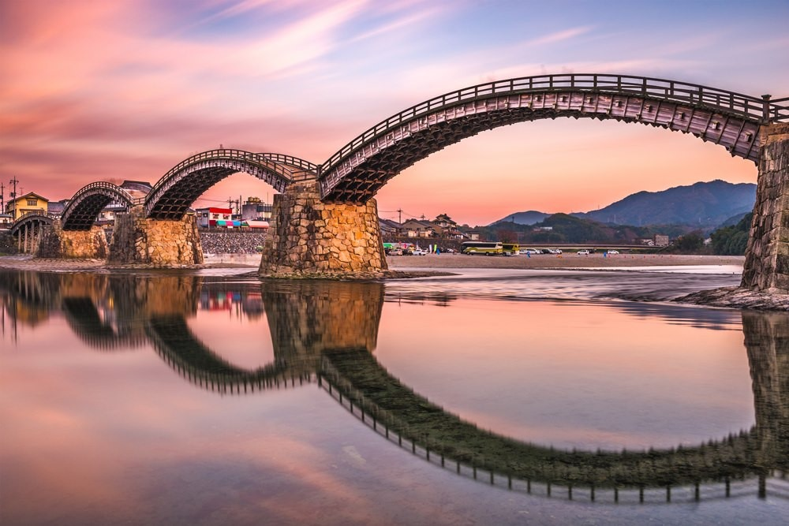
岩国・錦帯橋山口縣岩國市
橫跨錦川的五連拱木造橋，江戶時代的 1673 年初建，是日本三名橋之一。現存的橋身於 1953 年重建，優美的弧線倒映在溪面上，是岩國最具代表性的風景。
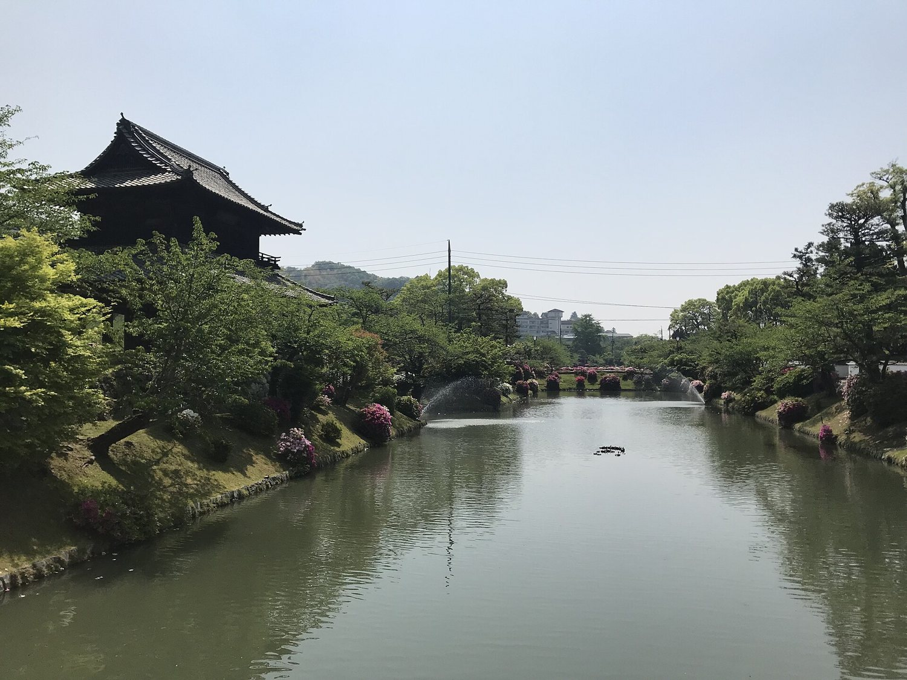
吉香公園山口縣岩國市
岩國藩主吉川家居館的遺址，公園內保留了護城河與錦雲閣等景點，從錦帶橋步行即可到達。水岸與林蔭間的步道安靜清幽，很適合悠閒散步。
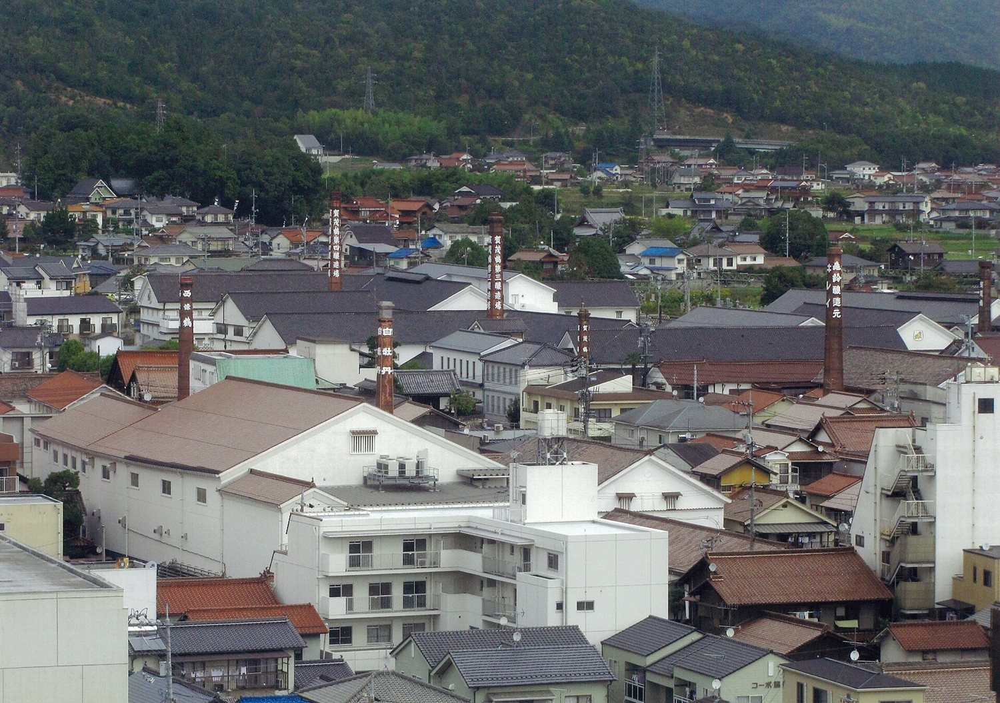
西条酒蔵通り廣島縣東廣島市
西條與京都伏見、兵庫灘並稱日本三大酒處。酒藏聚集的街區裡，紅磚煙囪與白牆黑瓦的藏屋比鄰而立，不少酒藏門前還會掛上杉玉（酒林），象徵新酒釀成。
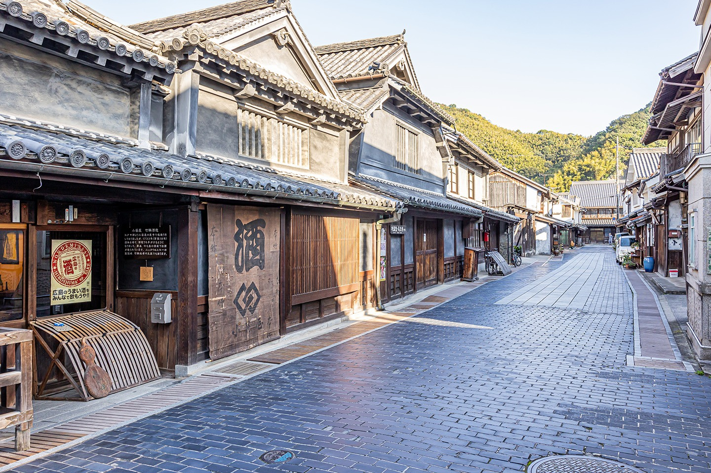
竹原町並み保存地区廣島縣竹原市
江戶時代靠製鹽與釀酒繁榮的港町，因完整保存了成排的老町家，被譽為「安藝的小京都」。這裡也是竹鶴酒造所在地，威士忌品牌 Nikka 的創辦人竹鶴政孝，就出生在這個酒造世家。
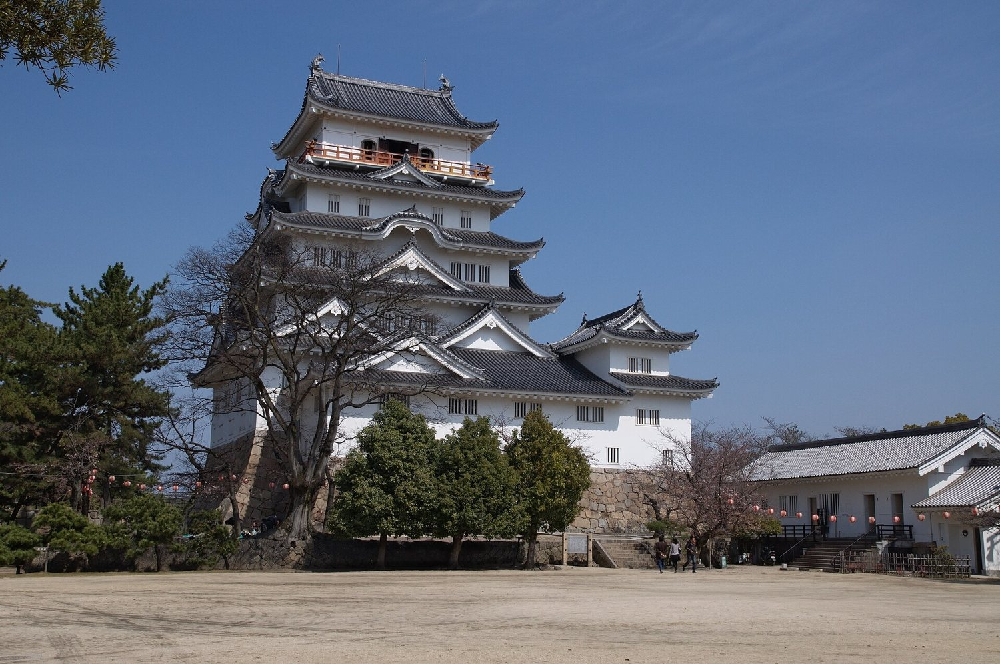
福山城廣島縣福山市
1622 年由初代藩主水野勝成築成的平城，緊鄰福山車站。現存的伏見櫓為國家重要文化財，相傳是從伏見城遷建而來；天守則為戰後重建，是福山市街的地標。
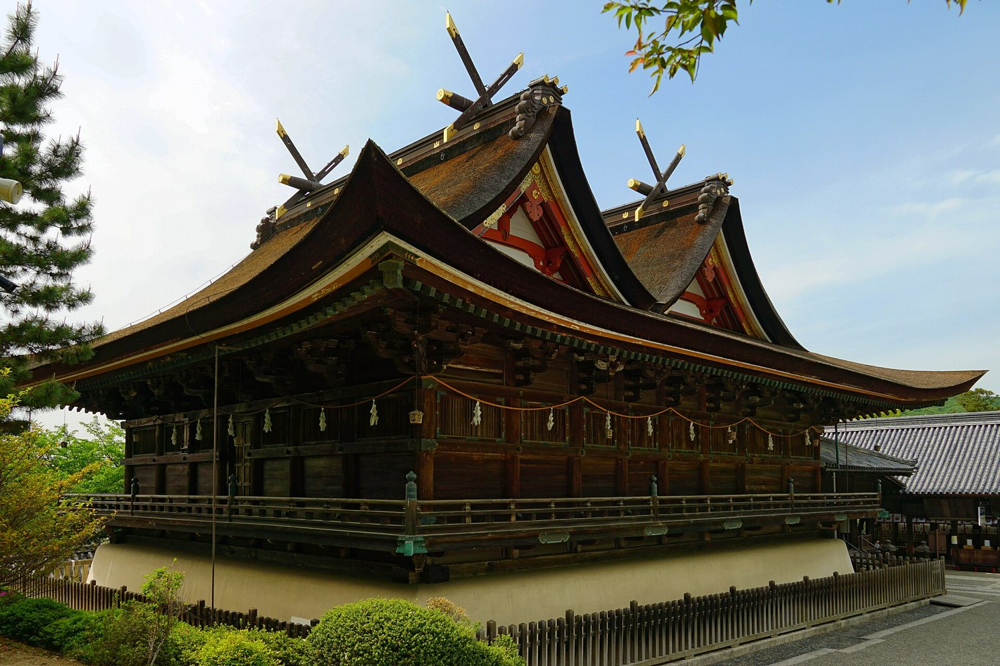
吉備津神社岡山縣岡山市
祭祀吉備津彥命，被認為是桃太郎傳說的原型之一。本殿與拜殿為國寶，獨特的「比翼入母屋造」屋頂又稱吉備津造，全國僅此一例；長約 360 公尺的迴廊沿著山坡蜿蜒，是另一個看點。
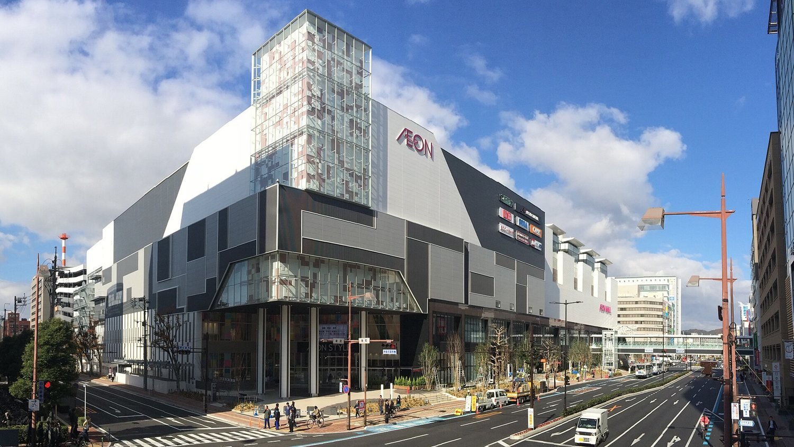
イオンモール岡山岡山縣岡山市
鄰近 JR 岡山站的大型購物中心，賣場、餐廳與日用品集中在同一處，返程前可以在這裡輕鬆補齊伴手禮與日用品。
NT$43,000／人
含接送・含小費・含2G 網卡・含行李 20KG
名額有限 欲報從速
行程順序依當地交通與天候得調整，飯店以「同級」為原則，實際以確認為準。